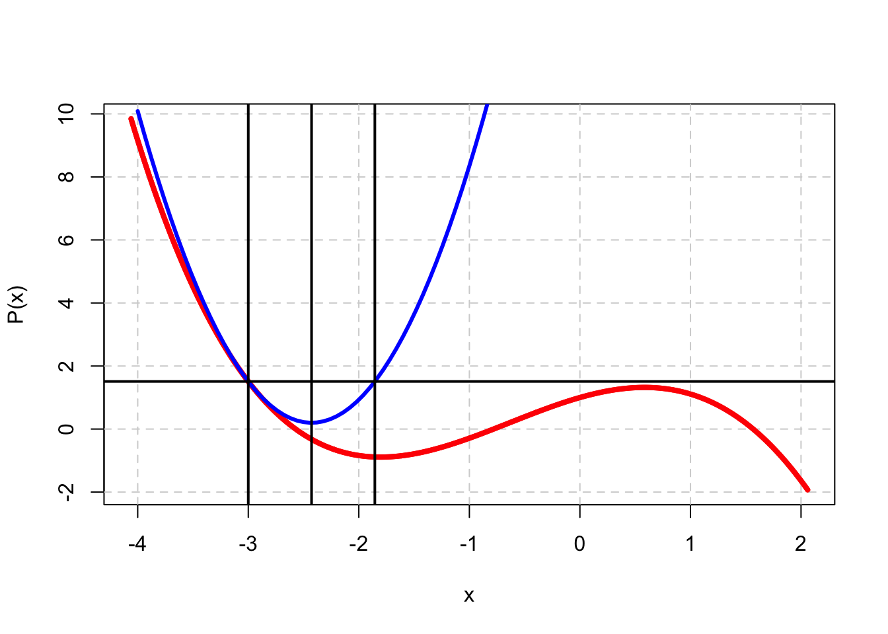
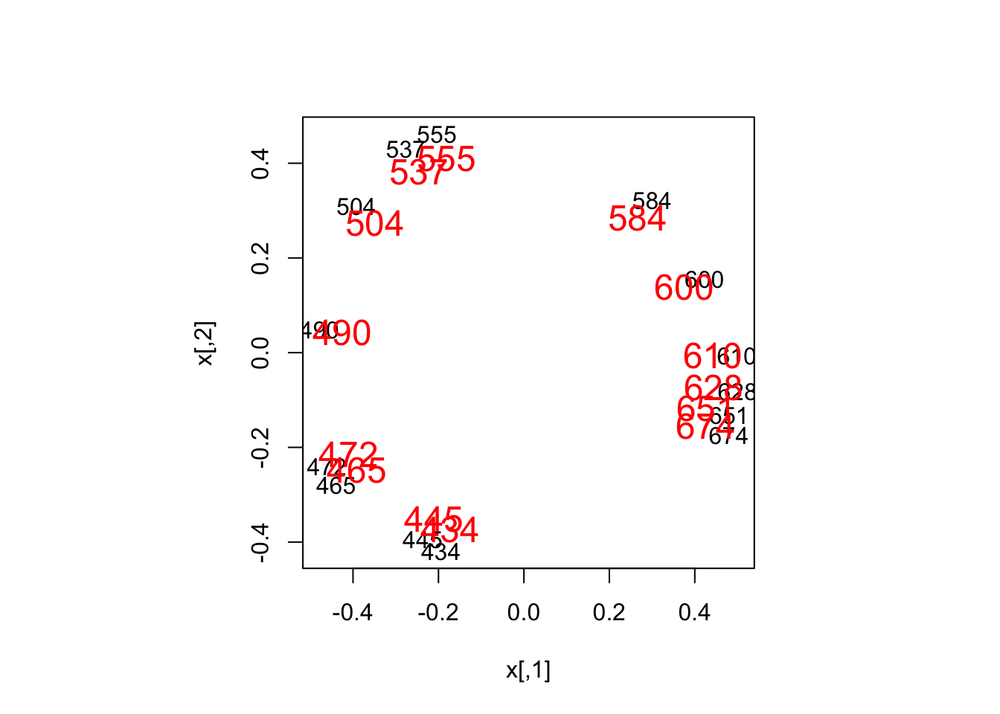

7 Acceleration of Convergence
7.1 Simple Acceleration
A simple and inexpensive way to accelerate smacof iterations was proposed by De Leeuw and Heiser (1980).
On the other hand, if we choose \(X=2\mathfrak{G}(Y)-Y\) then again \(X\not= Y\), but \(\eta^2(X-\mathfrak{G}(Y))=\eta^2(Y-\mathfrak{G}(Y))\). Thus
\[\begin{equation} \sigma(X)\leq 1+\eta^2(X-\mathfrak{G}(Y))-\eta^2(\mathfrak{G}(Y))= 1+\eta^2(Y-\mathfrak{G}(Y))-\eta^2(\mathfrak{G}(Y))=\sigma(Y). \tag{7.1} \end{equation}\]
Let’s define the two update rules \(\text{up}_A(X):=\mathfrak{G}(X)\) and \(\text{up}_B(X)=2\mathfrak{G}(X)-X\).

This is illustrated in figure …. We want to locate a local minimum of \(f\), in red, in the interval \((-4,2)\). In this case we happen to know that \(f\) is a quartic polynomial, with minimum -0.8894476 at -1.8044048. In the interval we are looking at we have \(f''(x)\leq 8\). Suppose our initial guess for the location of the minimum is \(x=-3\), the first vertical line from the left, with \(f(-3)\) equal to 1.51. The upper bound on the second derivative allows us to construct a quadratic majorizer \(g\), in blue, touching \(f\) at \(-3\). Update rule \(\text{up}_A\) tells us to go to the minimum of \(g\), which is at -2.4275, the second vertical line. Here \(g\) is equal to 0.198975 and \(f\) is -0.3245082.
Rule \(\text{up}_B\) “overrelaxes” and goes all the way to -1.855, the third vertical line from the left, where \(g\) is equal to both \(g(-3)\) and \(f(-3)\), and where \(f\) is -0.8862781, indeed much closer to the minimum. Examples such as this make \(\text{up}_B\) really look good.
De Leeuw and Heiser give a rather informal theoretical justification of \(\text{up}_B\) as well. Suppose the sequence \(X^+=\mathfrak{G}(X)\) generated by \(\text{up}_A\) has slow linear convergence with ACR \(1-\epsilon\), where \(\epsilon\) is positive and small. Then choosing the \(\text{up}_B\) will change the ACR of \(1-\epsilon\) to \(2(1-\epsilon)-1=1-2\epsilon\approx(1-\epsilon)^2\), and will approximately halve the number of iterations to convergence. This argument is supported by numerical experiments which seem to show that indeed about half the number of iterations are needed. It seems that \(\text{up}_B\) will get you something for almost nothing, and thus it has been implemented in many versions of the smacof programs as the default update. Unfortunately this means that many users have obtained, and presumably reported, MDS results that are incorrect.
What is ignored in De Leeuw and Heiser (1980) is that majorization only guarantees that the sequence of loss function values converges for both update methods. The general convergence theory discussed earlier in this chapter shows that for both \(\text{up}_A\) and \(\text{up}_B\) the sequence \(\{X^{(k)}\}\) has at least one accumulation point, and that the accumulation points of the sequence \(\{X^{(k)}\}\) are fixed points of the update rule, which means for both \(\text{up}_A\) and \(\text{up}_B\) that at accumulation points \(X\) we have \(X=\mathfrak{G}(X)\). But it does not say that \(\{X^{(k)}\}\) converges.
The argument also ignores that at any \(X\) the derivative of \(\text{up}_A\) has a zero eigenvalue, with eigenvector \(X\). For \(\text{up}_B\) the eigenvector \(X\) has eigenvalue equal to \(-1\), which is the largest one in modulus near any local minimum. And so …
Suppose we have a configuration of the form \(\alpha X\) with \(X=\mathfrak{G}(X)\). Then \(\text{up}_B(\alpha X)=2\mathfrak{G}(\alpha X)-\alpha X=(2-\alpha)X\) and \(\text{up}_B((2-\alpha)X)=\alpha X\). Thus starting with \(X^{(1)}=\alpha X\) \(\text{up}_B\) generates a sequence with even members \((2-\alpha)X\) and odd members \(\alpha X\). Thus there are two convergent subsequences with accumulation points \(\alpha X\) and \((2-\alpha)X\). And never the twain shall meet.
As far as stress is concerned, note that if \(X=\mathfrak{G}(X)\) then \(\sigma(\alpha X)=\sigma((2-\alpha)X)\). Thus the stress values never change, and consequently form a convergent sequence.
We also see that \(\text{up}^{(2)}_B(\alpha X):=\text{up}_B(\text{up}_B(\alpha X))=\alpha X\), which means that \(\alpha X\) is a fixed point of \(\text{up}_B^{(2)}\) for any fixed point \(X\) of \(\text{up}_A\) and any \(\alpha\).
Another way to express the difference between the two update rule is that \(\text{up}_A\) is self-scaling, i.e. \(\mathfrak{G}(\alpha X)=\mathfrak{G}(X)\), while \(\text{up}_B\) is not. Self-scaling implies \(\mathcal{D}\mathfrak{G}(X)(X)=0\), while for \(\text{up}_B\) \(\mathcal{D}(2\mathfrak{G}(X)-X)(X)=-X\).
Let’s now look at a real example. We use the Ekman color similarity data again, this time transformed by \(\delta_{ij}=(1-s_{ij})^3\), The analysis is in two dimensions, with no weights. We run four analyses, by crossing update rules \(\text{up}_A\) and \(\text{up}_B\) with stopping criteria \(\sigma(X^{(k)})-\sigma(X^{(k+1)})<\epsilon\) and \(\max_{i,s}|x^{(k)}_{is}-x^{(k+1)}_{is}|<\epsilon\). Let’s call these stopping criteria stop_f and stop_x. In all cases we allow a maximum of 1000 iterations and we set \(\epsilon\) to 1e-10.
The results are in table … The first subtable gives the number of iterations, the second the final stress value. We see that generally stop_x requires more iterations than stop_f, because it is a stricter criterion. If we use stop_x then \(\text{up}_B\) does not converge at all. Both with stop_f and stop_x \(\text{up}_B\) gves a higher stress value than \(\text{up}_A\). And yes, with stop_f (which is the default stop criterion in all smacof programs so far) \(\text{up}_B\) use fewer iterations than \(\text{up}_A\).
|
|
To verify that something is seriously wrong with running \(\text{up}_B\), we compute the maximum absolute value of the gradient at convergence for both rules and stop_f. For \(\text{up}_A\) it is 0.0000000010 and for \(\text{up}_B\) it is 0.7834335001. Once again, with \(\text{up}_B\) both loss function and configuration converge to an incorrect value.
This can also be illustrated graphically. We see from table … that \(\text{up}_B\) with stop_x ends after 1000 iteration. We perform an extra iteration, number 1001, and see how the configuration changes. In figure … iteration 1000 is in black, iteration 1001 in red with slightly bigger characters. Except for a scaling factor the two configurations are the same. Elementwise dividing the \(\text{up}_B\) by the \(\text{up}_A\) final configuration gives a shrink factor \(\alpha\) of 1.0595315. This shrink factor can also be computed from the final stress values. Using \(\rho(X)=\eta^2(X)\) and \(\sigma(X)=1-\eta^2(X)\) we find \(\sigma(\alpha X)-\sigma(X)=(\alpha-1)\eta^2(X)\), and thus
\[\begin{equation} \alpha=1\pm\sqrt{\frac{\sigma(\alpha X)-\sigma(X)}{1-\sigma(X))}}. \tag{7.2} \end{equation}\]
There are two values \(\alpha\) and \(2-\alpha\), equal to 0.9595728 and 1.0404272, because the sequence has two accumulation points.

Things do not look good for \(\text{up}_B\) but simple remedies are available. The first one is renormalization. After the iterations, with say stop_f, have converged, we scale the configuration such that \(\rho(X)=\eta^2(X)\) and recompute stress. This corrects both stress and the confguration to the correct outcome. Another way to normalize is to do another single \(\text{up}_A\) step after convergence of \(\text{up}_B\). This has the same effect. We tried \(\text{up}_B\) with both renormalization approaches and both stof_f and stop_b. The number of \(\text{up}_B\) iterations is still the same as in table … because we just compute something additional at the end. All stress values for the four combinations are now the correct 0.4696867. It seems that using \(\text{up}_B\) with stop_f and renorm at the end gives us the best of both worlds. It accelerates convergence and it gives the correct loss function values.
Of course \(\text{up}_B\) with stop_x still does not converge, and probably the best way to deal with that unfortunate fact is to avoid that combination. We can still use stop_x and get acceleration by define a single interation as \(\text{up}_{AB}(x):=\text{up}_A(\text{up}_B(X))\). For comparison purposes we also run \(\text{up}_{AA}(x):=\text{up}_A(\text{up}_A(X))\). Both converge to the correct values, \(\text{up}_{AA}\) in 17 and \(\text{up}_{AB}(x)\) in 10 iterations. Again \(\text{up}_{AB}\) is an attractive strategy. It works with both stop_f and stop_x and it accelerates. Less so than \(\text{up}_B\), however. If the ACR of \(\text{up}_A\) is \(1-\epsilon\), then, by the same reasoning as before, the ACR of \(\text{up}_{AB}\) is \((1-\epsilon)^\frac32\).